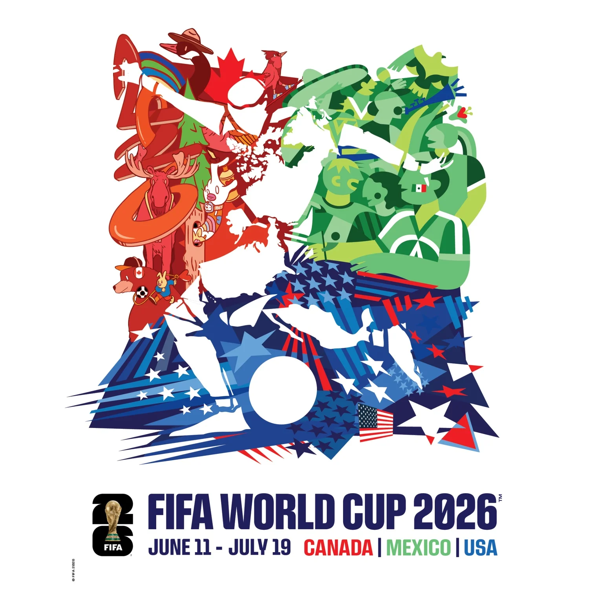
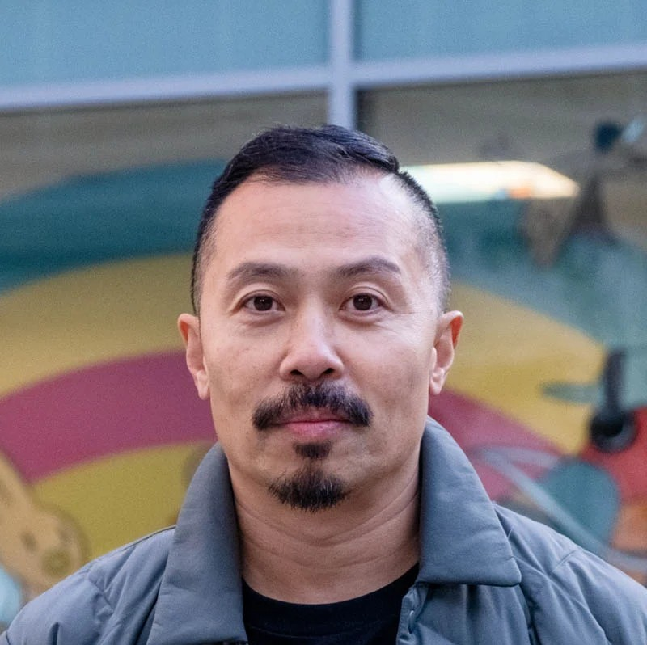

2026 Poster
designed by Carson Ting (Canada), Minerva GM (Mexico) and Hank Willis Thomas (United States)

Official Poster
The Official FIFA World Cup 2026™ is the first ever FIFA World Cup tournament co-hosted by three nations. The Official Tournament Poster celebrates the collaborative spirit, excitement and unity of this unique moment in time.
For the first time in FIFA World Cup™ history, three artists collaborated to develop the Official FIFA World Cup 2026™ Tournament Poster. Artists Carson Ting (Canada), Minerva GM (Mexico) and Hank Willis Thomas (United States), combined their talent and artistic styles to create a piece that showcases how a shared passion for football unites the world.

Carson Ting
Born in Toronto and based in Vancouver, Carson is a Canadian artist, designer, and founder of Chairman Ting. A graduate of the Ontario College of Art & Design, he began as an advertising art director for brands like Lexus, Sony, and Honda. He later joined the lead creative team for the Nike Jordan brand, working on the award-winning #RiseAboveOlympic campaign. Today, he runs his studio from Vancouver’s West End, proudly representing Canadian creativity on the global stage.
Minerva GM
Based in the Caribbean, Minerva is a Mexican illustrator with a career across editorial, advertising, and textile design. Born in Toluca, her creative identity was shaped by the city’s deep-rooted football culture and the landscapes of the Nevado de Toluca. After graduating from Tecnológico de Monterrey, she built her professional roots in Mexico City before expanding her practice to international exhibitions. Her work focuses on a multidisciplinary approach to storytelling, representing a vibrant and contemporary side of Mexican illustration.

Hank Willis Thomas
Based in New York, Hank Willis Thomas is a conceptual artist whose multidisciplinary practice explores identity, media, love, power, and popular culture. Born in Plainfield, New Jersey, he holds a BFA from NYU and an MFA from California College of the Arts, along with multiple honorary doctorates. His work reflects on American cultural influence and includes major public artworks such as The Embrace in Boston and additional permanent installations across Brooklyn, Chicago, Miami, Montgomery, and San Francisco.